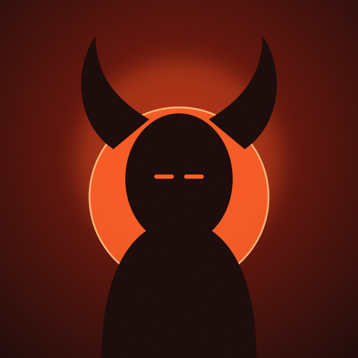

SINNER is out now: the trilogy is complete
Four years, three records, one body. The final chapter is here — and it's the loudest confession yet.
Announcements, studio notes, tour news and press — straight from the source.

Four years, three records, one body. The final chapter is here — and it's the loudest confession yet.

From Brixton to Lagos to Roskilde — the biggest run of shows yet, with a new live band and a 12-voice choir.
Read story
A burning set, a single camera and 14 attempts. Director Tolu Adeyemi on how they pulled it off.
Read storyFive stars from The Low End, four from Southbound and a Track of the Week nod. Here's what the critics are saying.
Read storyHow the Peckham Mass Choir ended up singing on the darkest record of the trilogy.
Read story
The third taste of SINNER arrives with a visualiser and a very red apple.
Read storyTwelve albums, one halo. SAINT makes the 2025 Southbank Sound Prize shortlist.
Read storyNo stories in this category yet.
Four years after LORD first crowned itself from a Peckham box room, the trilogy is finished. SINNER is out everywhere today via FireSprite Ent — eleven songs, forty-one minutes, and one very long night in a deconsecrated chapel.
“Every record has been a different mask,” says Lord,Saint,Sinner. “LORD was the one I wore to survive. SAINT was the one I wore to be loved. SINNER is what's underneath both of them. It's the least flattering thing I've made and the most honest.”
The album features Nia Okafor on “Burn Slow” and the Peckham Mass Choir across four songs, with production from long-time collaborator Theo Mensah and mixing by Ines Carvalho.
Signed blood-red vinyl, the Trilogy box set and the SINNER candle are available now in the shop. The Trinity Tour begins at O2 Academy Brixton on 3 October.
— Lord,Saint,Sinner newsroom
Tour · 2 Sept 2026
The Trinity Tour starts in London on 3 October and runs through Europe, North America and Africa before festival season in 2027.
Each show is built in three acts — one for each record — with a new live band, a 12-voice choir and a stage designed by Studio Ashgrove. “You'll walk in to the crown and walk out after the fall,” says creative director Tolu Adeyemi.
The second Brixton date was added after the first sold out in eleven minutes. Congregation members get presale access 48 hours before general sale — join the mailing list to be first in line.
VIP packages, including soundcheck access and a signed setlist, are available on every date while stocks last.
— Lord,Saint,Sinner newsroom
Studio · 18 Aug 2026
The “Fever Psalm” video was shot in a single, unbroken take — and it took fourteen attempts to get it.
“We only had enough flame bars for about twenty runs,” laughs director Tolu Adeyemi. “On take nine a pew caught for real. Take fourteen is the one you see, and you can hear the crew cheering in the last second if you listen for it.”
The set was built inside the same Deptford chapel where the album was recorded. Every candle in the frame was lit by hand between takes.
Watch the full video on the Videos page, alongside part one of the Behind the Veil documentary series.
— Lord,Saint,Sinner newsroom
Press · 14 Sept 2026The first reviews of SINNER are in, and the congregation is growing.
The Low End gave the album five stars, calling it “a masterpiece of beautiful wrongdoing — the rare trilogy closer that makes you want to start again from the top.” Southbound praised “the most ambitious British R&B record in years,” while Night Service Weekly named “Devil in the Choir” Track of the Week.
“I don't read reviews,” says Lord,Saint,Sinner. “My mum does, and she reads them to me down the phone. So thank you, I guess, from both of us.”
— Lord,Saint,Sinner newsroom
Studio · 30 Jul 2026The Peckham Mass Choir is where it all began — Lord,Saint,Sinner sang with them every Sunday from the age of seven.
“Asking them to sing on SAINT made sense. Asking them to sing on a song called ‘Devil in the Choir’ was a harder conversation,” they admit. “Auntie Grace read the lyrics twice, put her glasses down and said, ‘Well, he's got to be somewhere.’”
The choir recorded their parts in two nights, gathered around a single ribbon mic in the centre of the chapel. Four of their performances made the final record.
— Lord,Saint,Sinner newsroom
News · 8 Jul 2026
“Forbidden” is the third single from SINNER and the most upbeat thing in the trilogy — a 108 bpm confession you can dance to.
“It's about the moment you know exactly what the right choice is and you're already reaching for the other one,” says Lord,Saint,Sinner.
The official visualiser, made with artist Mara Quist, is out now on YouTube and on the Videos page.
— Lord,Saint,Sinner newsroom
Press · 22 Jul 2025SAINT has been named on the 2025 Southbank Sound Prize shortlist, alongside eleven of the year's best British and Irish albums.
“I wrote this record in a bedroom with the curtains shut,” says Lord,Saint,Sinner. “The idea that it's now in the same sentence as some of my heroes is mad to me.”
A live performance of “Candlelight” at the awards ceremony was later released as a single.
— Lord,Saint,Sinner newsroom